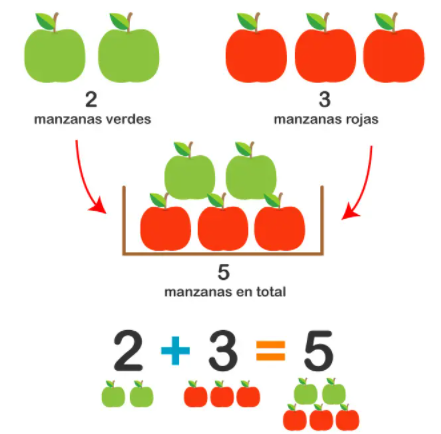

Las sumas y restas son las primeras operaciones matemáticas que aprendemos; algunos niños incluso aprenden antes de comenzar la escuela primaria. Aprender a sumar y restar es sencillo, si tenemos en cuenta que a los niños pequeños les cuesta más entender conceptos abstractos que reales: si les mostramos cuatro manzanas y luego añadimos una explicando que ahora son cinco, lo entenderán mejor que si decimos 4+1 es igual a 5.
En este post vamos a comenzar desde lo muy básico, para luego pasar a operaciones de sumas y restas llevando; vamos a explicarlo todo paso a paso, y vamos a dejaros ejercicios para practicar lo aprendido.
Sumar es juntar dos o más cosas en un grupo, para saber cuántas hay en total:

Si tengo 2 manzanas verdes y 3 manzanas rojas, y quiero saber cuántas manzanas tengo en total, junto todas las manzanas en un solo cesto y las cuento: tengo 5 manzanas en total, por lo tanto 2 + 3 es igual a 5.
También podemos representar la suma en la línea de números, e ir saltando de un número a otro para hacer la suma.
Por ejemplo:
Un pajarito salta hasta el número 3. Luego hace otros 2 saltos, y llega al número 5. Por lo tanto, 2 + 3 es igual a 5.
👉 Los números que se suman dentro de una operación se llaman SUMANDOS
Restar es quitar una cierta cantidad a otra que ya teníamos
Veamos un ejemplo:
Si tengo 5 manzanas en una cesta, y quito 2, dentro de la cesta me quedarán 3 manzanas. es decir que 5 menos 2 es igual a 3.
Como hemos visto con las sumas, también podemos usar la línea de números para restar.
Por ejemplo:
Un pajarito hace 5 saltos y llega al número 5, luego hace 2 saltos hacia atrás, y por lo tanto llega al número 3.
👉 En una resta, el primero de los dos números que intervienen y es la cantidad de la que debe restarse otra se llama MINUENDO. El segundo número que debe restarse al primero se llama SUSTRAENDO.